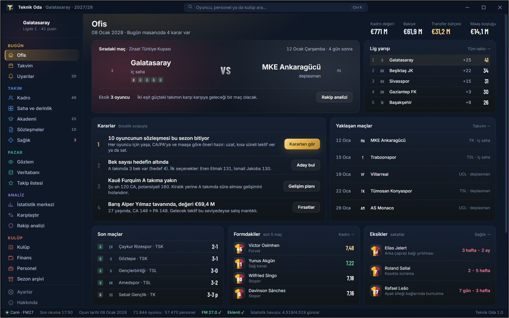
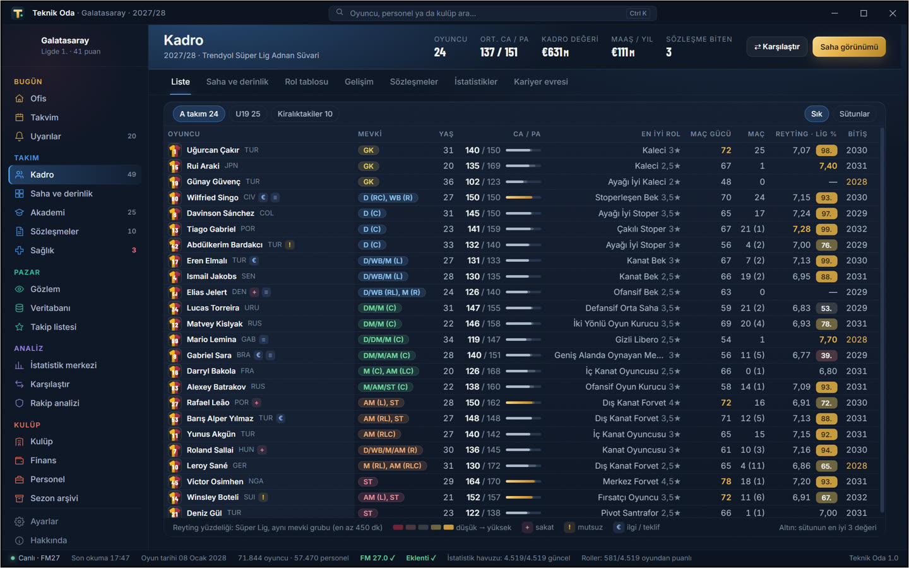
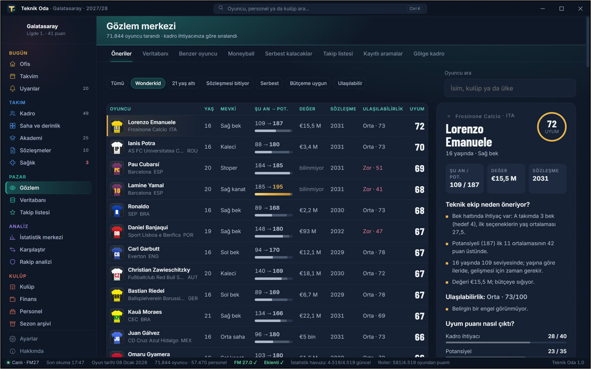
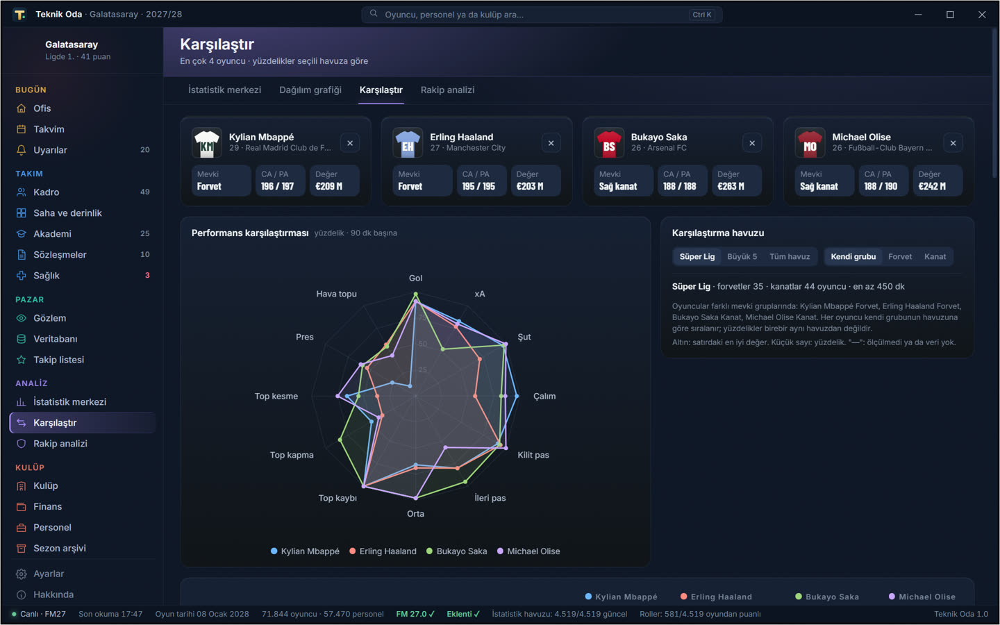
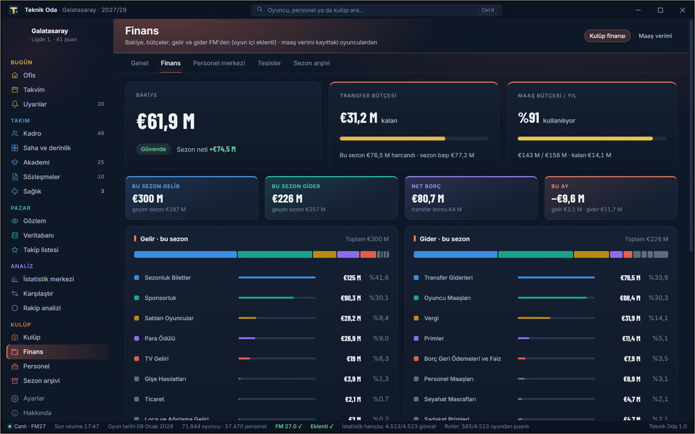

Football Manager kariyerini okur; kadro, gözlem, rakip ve finansı tek uygulamada, renkli ve anlaşılır şekilde önüne koyar.It reads your Football Manager career and lays out squad, scouting, opposition and finances in one clear, colourful app.

Rol yıldızları doğrudan oyundan gelir. Form, lig yüzdeliği ve sözleşme aynı tabloda durur.
Role stars come straight from the game. Form, league percentile and contracts sit in one table.

Gözlem önerileri kadro ihtiyacına göre sıralanır, neden önerildiği de yazılır.
Scouting suggestions are ranked by squad need, with the reason written out.

Aynı ölçütler, aynı havuz. Rakip raporu ve lig yüzdelikleri de burada.
Same metrics, same pool. Opposition reports and league percentiles live here too.

Gelir, gider, bütçeler, personel ve tesisler tek yerde.
Income, expenditure, budgets, staff and facilities in one place.

Oyunu değiştirmez, yalnız veri gösterir. Gizli değerleri gösterebilir; dürüst gözlem modu başka kulüplerdeki oyuncuların PA değerini gizler.
It changes nothing in your game and only shows data. It can show hidden values; honest scouting mode hides PA for players at other clubs.
İsteğe bağlıdır. Oyun klasörüne dosya ekler ve Ofis, roller ve Oyunda aç özelliklerini açar. Ayarlar'dan kaldırılabilir.
It is optional. It adds files to the game folder and enables Office data, roles and Open in game. You can remove it from Settings.
FM'e kurduğun yüz ve logo paketlerinden. Paket yoksa uygulama yine çalışır: baş harf, forma ve kulüp renkleri görünür.
From the face and logo packs you installed for FM. Without packs the app still works and shows initials, shirts and club colours.
Steam sürümü denendi. Epic Games ve Xbox / Game Pass sürümleri deneme aşamasında.
The Steam version is tested. Epic Games and Xbox / Game Pass versions are in trial.
Yamalar uygulamayı kısa süre durdurabilir. Uygulama bunu fark edip uyarır ve uyumluluk güncellemesi gelir.
Patches can stop it for a short time. The app detects this and warns you, and a compatibility update follows.